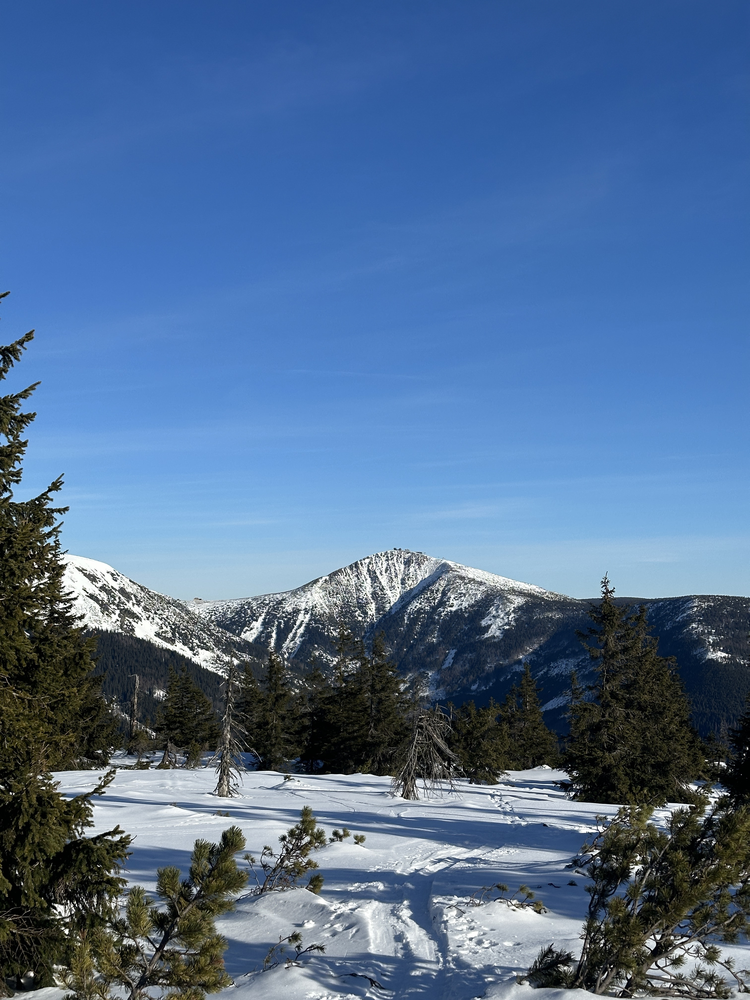
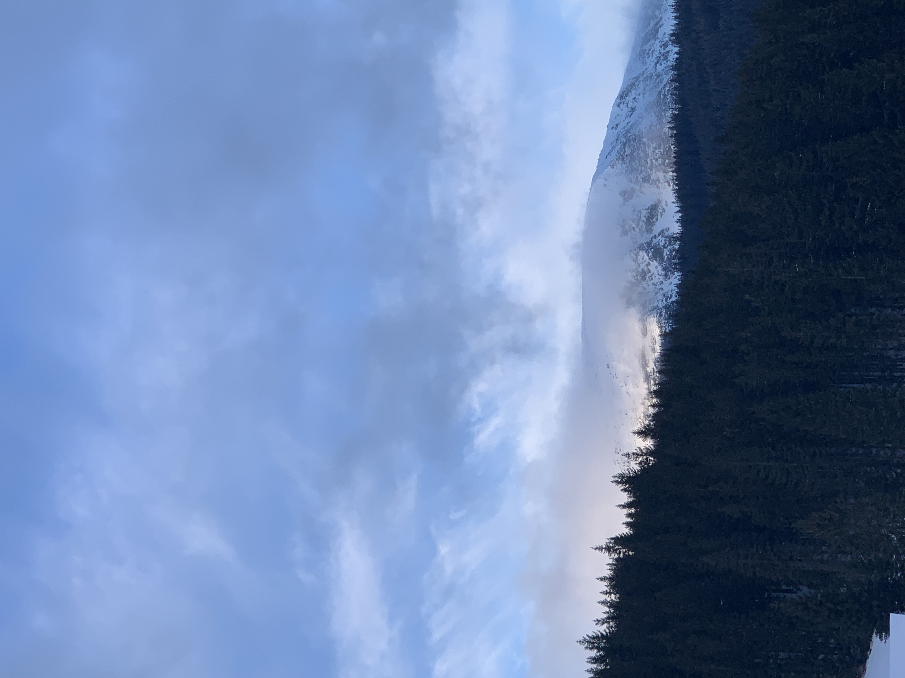
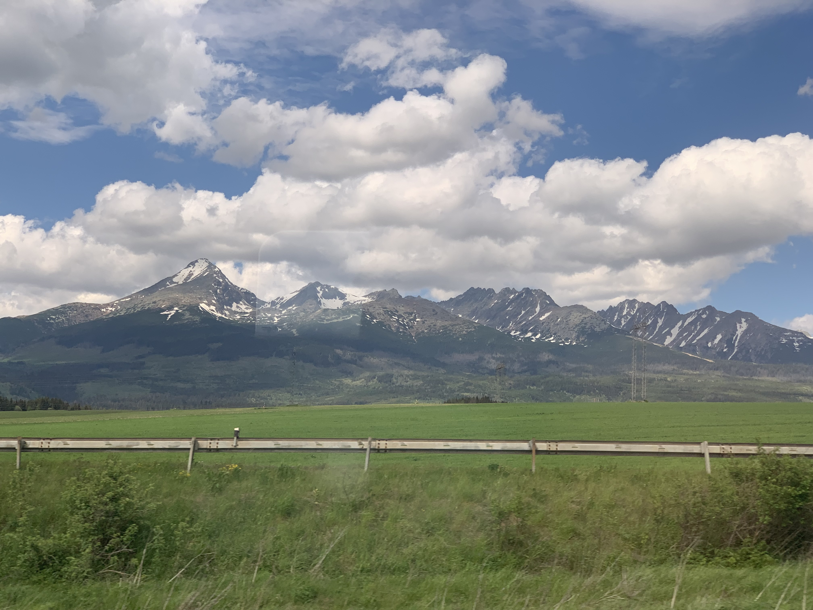
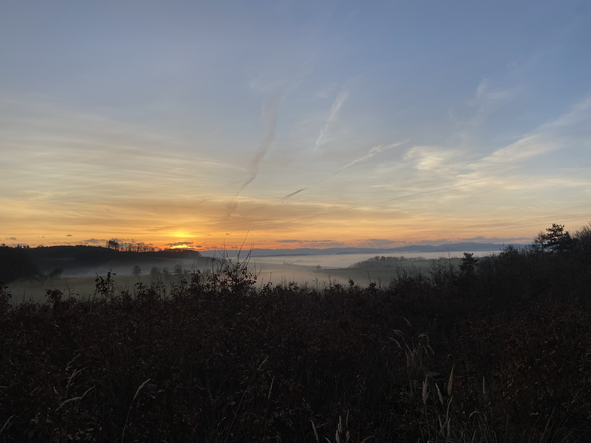
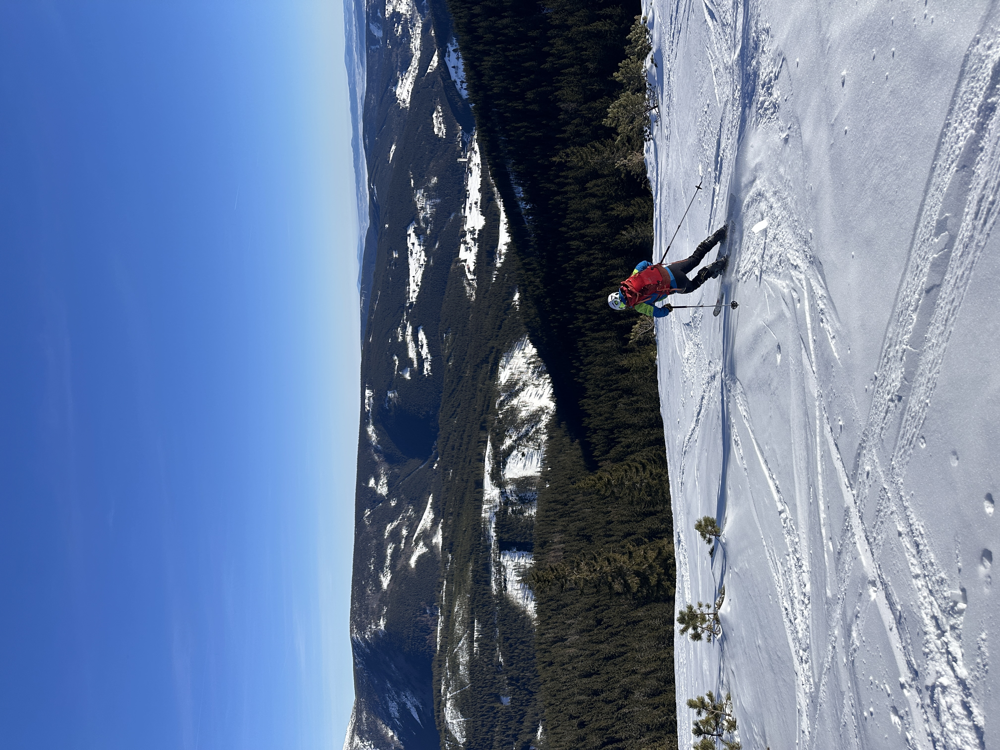

A Czech organisation keeping mountain landscapes — and the cultures that grew from them — intact.
A mountain is never only a mountain.Founding principle · Fryšták, 2018


Taro began in Fryšták in 2018, in the foothills of the Beskydy, with one conviction — that a landscape and the culture shaped by it cannot be separated. Protect one carelessly and you lose the other.
We work between field ecology, intangible heritage and the people who actually live on these slopes, linking Czech highland knowledge with mountain communities from the Andes to the Khumbu.
Ecology, culture and community — a mountain cannot be held onto unless the traditions and people that define it are held onto first.
Restoring alpine meadow, peat bog and forest corridor worn down by climate shift and heavy use — alongside the ecologists, foresters and farmers already there.
Recording dialect, pastoral practice, timber building and hand skill. Culture here is not an archive to be filed — it is something still in use, and it needs using.
Teaching guides, schoolteachers and village councils to carry this themselves. Nothing we do outlasts us unless the people closest to the land are holding it.



Fryšták sits in the Zlín region at the foot of the Beskydy. The Czech ranges are low by the measure of an atlas and very large by every other one.
Co-founder & Director
Daniel grew up between Fryšták and the Beskydy trails above it. A field ecologist with a decade across Central European ranges, he leads Taro's conservation science and its partnerships abroad — on the belief that ecology and culture are two languages describing one place.
Co-founder & Head of Culture
Samuel is a cultural anthropologist and documentary maker from the Zlín region, working on intangible heritage in mountain communities. He runs Taro's archive, education and community programmes, and has spent years recording disappearing dialect and practice across Moravia.
Volunteer, give, or simply pass it on. Taro is a registered Czech NGO run on transparent, community-accountable terms.